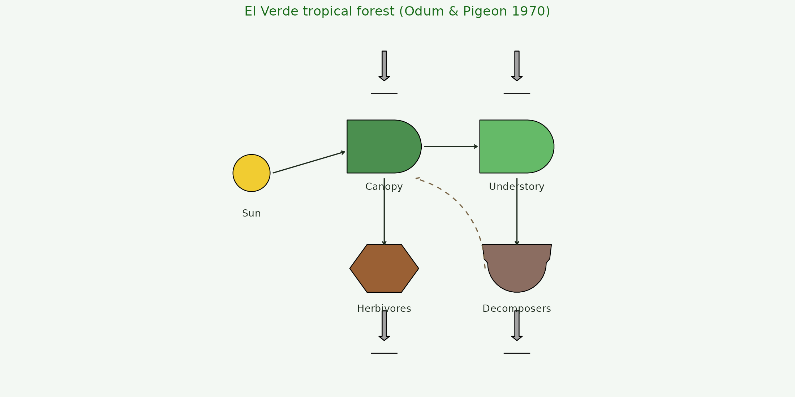
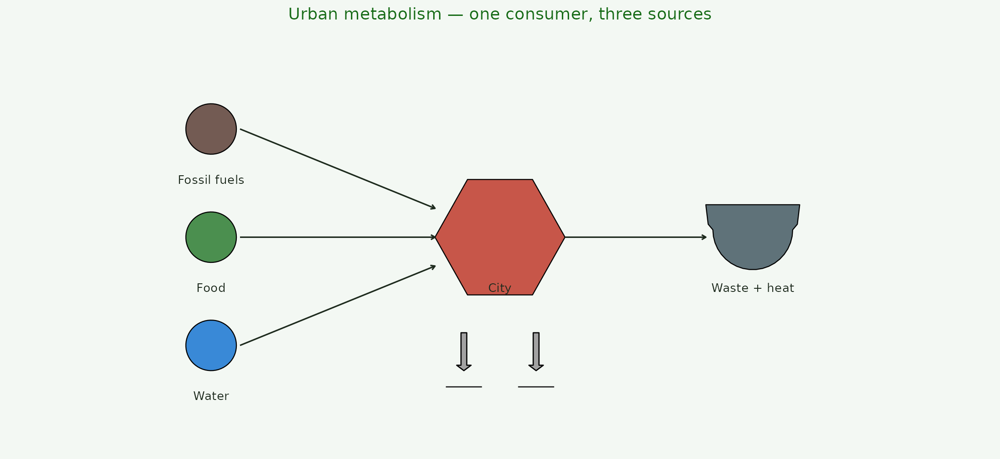
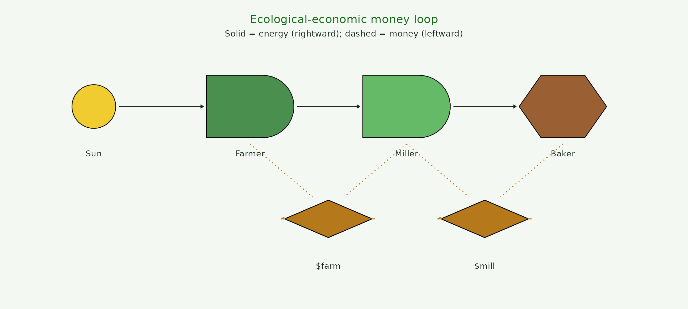
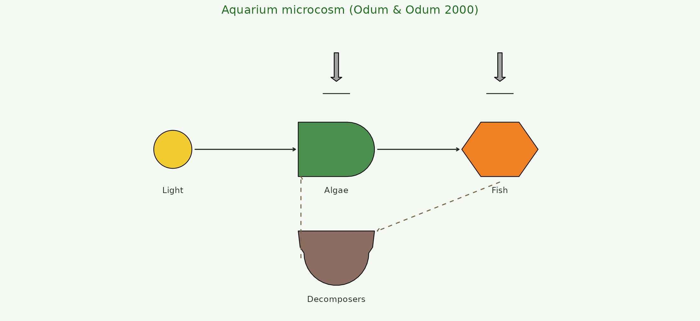

Four canonical Odum diagrams reproduced from energese
primitives. Each is a short recipe you can copy, tweak, and adapt for
your own system.
1. El Verde tropical forest
The system Odum studied at El Verde, Puerto Rico (Odum & Pigeon 1970, funded by the U.S. Atomic Energy Commission) — the empirical basis for the entire Energy Systems Language. Sun drives an autotroph canopy; the canopy passes emergy to an understory producer + a consumer web (herbivores, decomposers); the whole loop terminates in heat.
d <- data.frame(
x = c(1, 3.5, 6.0, 3.5, 6.0),
y = c(3, 3.5, 3.5, 1.2, 1.2),
role = c("Sun", "Canopy", "Understory",
"Herbivores", "Decomposers"))
ggplot(d, aes(x, y)) +
geom_odum_source (data = d[1, ], radius = 0.35, fill = "#F1C40F") +
geom_odum_producer(data = d[2, ], width = 1.4, height = 1.0,
fill = "#2E7D32") +
geom_odum_producer(data = d[3, ], width = 1.4, height = 1.0,
fill = "#4CAF50") +
geom_odum_consumer(data = d[4, ], width = 1.3, height = 0.9,
fill = "#8B4513") +
geom_odum_storage (data = d[5, ], width = 1.3, height = 0.9,
fill = "#795548") +
# Sun -> canopy, canopy -> understory
annotate("segment", x = 1.4, xend = 2.75, y = 3, yend = 3.4,
arrow = arrow(length = unit(0.12, "cm")), colour = ink) +
annotate("segment", x = 4.25, xend = 5.25, y = 3.5, yend = 3.5,
arrow = arrow(length = unit(0.12, "cm")), colour = ink) +
# Canopy -> herbivores, understory -> decomposers
annotate("segment", x = 3.5, xend = 3.5, y = 2.9, yend = 1.65,
arrow = arrow(length = unit(0.12, "cm")), colour = ink) +
annotate("segment", x = 6.0, xend = 6.0, y = 2.9, yend = 1.65,
arrow = arrow(length = unit(0.12, "cm")), colour = ink) +
# Decomposition loop back to canopy
annotate("curve", x = 5.4, xend = 4.1, y = 1.2, yend = 2.9,
curvature = 0.35, arrow = arrow(length = unit(0.12, "cm")),
colour = "#7A6647", linetype = "dashed") +
# Heat sinks
geom_odum_heat_sink(data = data.frame(x = c(3.5, 6.0, 3.5, 6.0),
y = c(4.9, 4.9, 0.0, 0.0)),
width = 0.5, height = 0.8) +
geom_text(aes(y = y - 0.75, label = role), size = 3.2, colour = ink) +
coord_fixed(xlim = c(0, 7.5), ylim = c(-0.9, 5.6)) +
labs(title = "El Verde tropical forest (Odum & Pigeon 1970)") +
theme_void() +
theme(plot.background = element_rect(fill = bg, colour = NA),
plot.title = element_text(hjust = 0.5, size = 12, colour = "#176b17"))
2. Urban metabolism
External fuels + food + water pass into a city consumer, which dissipates heat + waste. The classical Odum urban diagram — one consumer aggregates the entire settlement.
d <- data.frame(
x = c(1, 1, 1, 5, 8.5),
y = c(4, 2.5, 1, 2.5, 2.5),
role = c("Fossil fuels", "Food", "Water", "City", "Waste + heat"))
ggplot(d, aes(x, y)) +
geom_odum_source (data = d[1, ], radius = 0.35, fill = "#5D4037") +
geom_odum_source (data = d[2, ], radius = 0.35, fill = "#2E7D32") +
geom_odum_source (data = d[3, ], radius = 0.35, fill = "#1976D2") +
geom_odum_consumer(data = d[4, ], width = 1.8, height = 1.6,
fill = "#C0392B") +
geom_odum_storage (data = d[5, ], width = 1.3, height = 0.9,
fill = "#455a64") +
# Sources -> city
annotate("segment", x = 1.4, xend = 4.1, y = 4, yend = 2.9,
arrow = arrow(length = unit(0.12, "cm")), colour = ink) +
annotate("segment", x = 1.4, xend = 4.1, y = 2.5, yend = 2.5,
arrow = arrow(length = unit(0.12, "cm")), colour = ink) +
annotate("segment", x = 1.4, xend = 4.1, y = 1, yend = 2.1,
arrow = arrow(length = unit(0.12, "cm")), colour = ink) +
# City -> waste
annotate("segment", x = 5.9, xend = 7.85, y = 2.5, yend = 2.5,
arrow = arrow(length = unit(0.12, "cm")), colour = ink) +
# Heat sinks under the city
geom_odum_heat_sink(data = data.frame(x = c(4.5, 5.5), y = 0.8),
width = 0.5, height = 0.75) +
geom_text(aes(y = y - 0.7, label = role), size = 3.1, colour = ink) +
coord_fixed(xlim = c(0, 10), ylim = c(-0.3, 5.2)) +
labs(title = "Urban metabolism — one consumer, three sources") +
theme_void() +
theme(plot.background = element_rect(fill = bg, colour = NA),
plot.title = element_text(hjust = 0.5, size = 12, colour = "#176b17"))
3. Ecological-economic money loop
Matter/energy flow right through the system; money flow goes counter-clockwise, left, meeting each producer and consumer at a transaction diamond. Odum used this diagram to argue for emergy-based valuation: money follows work in the opposite direction of the underlying flow it is paying for.
d <- data.frame(
x = c(1, 3.5, 6, 8.5, 4.75, 7.25),
y = c(3, 3, 3, 3, 1.2, 1.2),
role = c("Sun", "Farmer", "Miller", "Baker", "$farm", "$mill"))
ggplot(d, aes(x, y)) +
geom_odum_source (data = d[1, ], radius = 0.35, fill = "#F1C40F") +
geom_odum_producer (data = d[2, ], width = 1.4, height = 1.0,
fill = "#2E7D32") +
geom_odum_producer (data = d[3, ], width = 1.4, height = 1.0,
fill = "#4CAF50") +
geom_odum_consumer (data = d[4, ], width = 1.4, height = 1.0,
fill = "#8B4513") +
geom_odum_transaction(data = d[5, ], width = 1.4, height = 0.6,
fill = "#b5791b") +
geom_odum_transaction(data = d[6, ], width = 1.4, height = 0.6,
fill = "#b5791b") +
# Energy chain: sun -> farmer -> miller -> baker
annotate("segment", x = 1.4, xend = 2.75, y = 3, yend = 3,
arrow = arrow(length = unit(0.12, "cm")), colour = ink) +
annotate("segment", x = 4.25, xend = 5.25, y = 3, yend = 3,
arrow = arrow(length = unit(0.12, "cm")), colour = ink) +
annotate("segment", x = 6.75, xend = 7.75, y = 3, yend = 3,
arrow = arrow(length = unit(0.12, "cm")), colour = ink) +
# Money counter-flow (dashed)
annotate("segment", x = 5.5, xend = 4.0, y = 1.2, yend = 1.2,
arrow = arrow(length = unit(0.12, "cm")),
colour = "#b5791b", linetype = "dashed") +
annotate("segment", x = 8.0, xend = 6.5, y = 1.2, yend = 1.2,
arrow = arrow(length = unit(0.12, "cm")),
colour = "#b5791b", linetype = "dashed") +
# Transaction taps: producers <-> money
annotate("segment", x = 3.5, xend = 4.5, y = 2.4, yend = 1.55,
colour = "#b5791b", linetype = "dotted") +
annotate("segment", x = 6.0, xend = 5.0, y = 2.4, yend = 1.55,
colour = "#b5791b", linetype = "dotted") +
annotate("segment", x = 6.0, xend = 7.0, y = 2.4, yend = 1.55,
colour = "#b5791b", linetype = "dotted") +
annotate("segment", x = 8.5, xend = 7.5, y = 2.4, yend = 1.55,
colour = "#b5791b", linetype = "dotted") +
geom_text(aes(y = y - 0.75, label = role), size = 3.1, colour = ink) +
coord_fixed(xlim = c(0, 10), ylim = c(0.1, 3.9)) +
labs(title = "Ecological-economic money loop",
subtitle = "Solid = energy (rightward); dashed = money (leftward)") +
theme_void() +
theme(plot.background = element_rect(fill = bg, colour = NA),
plot.title = element_text(hjust = 0.5, size = 12, colour = "#176b17"),
plot.subtitle = element_text(hjust = 0.5, size = 9, colour = ink))
4. Aquarium / microcosm
The classroom example from Modeling for All Scales (Odum & Odum 2000): a small closed system with a source (light), a producer (algae), a consumer (fish), and a return loop through decomposition. The classic pedagogical diagram for learning to read ESL.
d <- data.frame(
x = c(1, 4, 7, 4),
y = c(3, 3, 3, 1),
role = c("Light", "Algae", "Fish", "Decomposers"))
ggplot(d, aes(x, y)) +
geom_odum_source (data = d[1, ], radius = 0.35, fill = "#F1C40F") +
geom_odum_producer(data = d[2, ], width = 1.4, height = 1.0,
fill = "#2E7D32") +
geom_odum_consumer(data = d[3, ], width = 1.4, height = 1.0,
fill = "#EF6C00") +
geom_odum_storage (data = d[4, ], width = 1.4, height = 1.0,
fill = "#795548") +
annotate("segment", x = 1.4, xend = 3.25, y = 3, yend = 3,
arrow = arrow(length = unit(0.12, "cm")), colour = ink) +
annotate("segment", x = 4.75, xend = 6.25, y = 3, yend = 3,
arrow = arrow(length = unit(0.12, "cm")), colour = ink) +
annotate("segment", x = 7, xend = 4.75, y = 2.4, yend = 1.5,
arrow = arrow(length = unit(0.12, "cm")), colour = "#7A6647",
linetype = "dashed") +
annotate("segment", x = 3.35, xend = 3.35, y = 1, yend = 2.5,
arrow = arrow(length = unit(0.12, "cm")), colour = "#7A6647",
linetype = "dashed") +
geom_odum_heat_sink(data = data.frame(x = c(4, 7), y = 4.4),
width = 0.5, height = 0.75) +
geom_text(aes(y = y - 0.75, label = role), size = 3.1, colour = ink) +
coord_fixed(xlim = c(0, 8.5), ylim = c(0.1, 5.2)) +
labs(title = "Aquarium microcosm (Odum & Odum 2000)") +
theme_void() +
theme(plot.background = element_rect(fill = bg, colour = NA),
plot.title = element_text(hjust = 0.5, size = 12, colour = "#176b17"))
Where to go next
Each of the four diagrams above is a template. Swap the roles (source
→ wind, producer → wheat field, consumer → poultry-CAFO, storage → grain
elevator) and the whole vocabulary follows. The step-by-step vignette
(vignette("step-by-step", package = "energese")) walks
through the assembly of a single diagram one geom at a time.